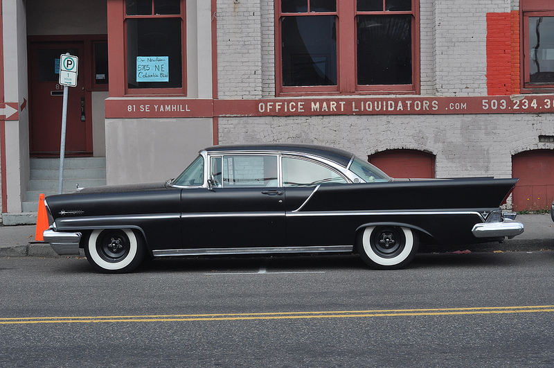

About
Turn any images, videos, or elements with a background-image into crappy lo-fi ascii art. Your site will be faster and more user-friendly as a result. Which equals more users and big dollars. Everyone wins!
While you're at it, for maximum optimization you can also take advantage of a few of the bundled features, which strip out all these "new-fangled" browser enhancements, such as border-radius, custom fonts, and color.
Demo

Code
// Works on images:
var image = document.querySelector('#image');
new Asciify(image);
// Works on background images:
var bg = document.querySelector('[style*="background"]');
new Asciify(image);
// WORKS ON VIDEO
var vid = document.querySelector('video'); // (HTML5)
new Asciify(vid);
// note: for now, you'll need to wrap the <video> in a <div>